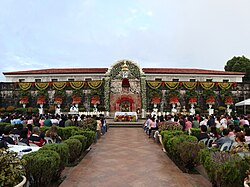
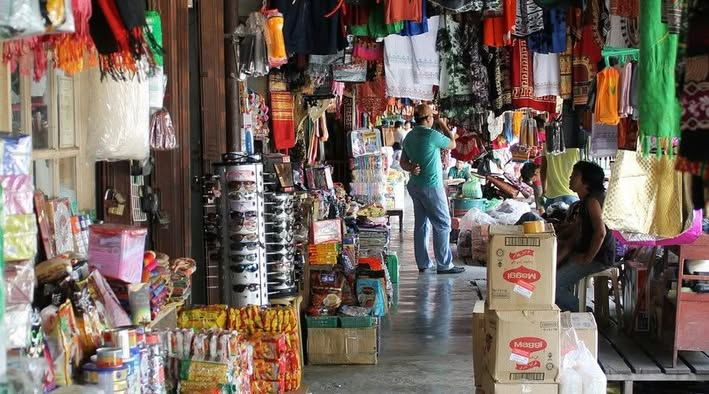
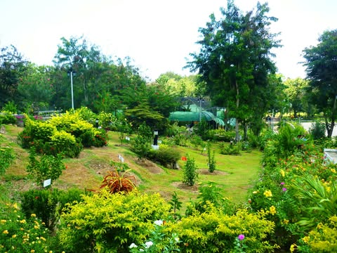
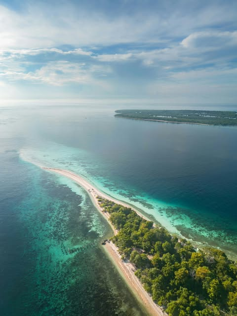

Fort Pilar
Fort Pilar is a historical fortress built during the Spanish colonial period. It is one of Zamboanga City's most recognized landmarks and is also an important religious and cultural site.

Canelar Barter Trade Center
A bustling indoor-outdoor shopping area located in Zamboanga City, Philippines. It is known for its lively atmosphere and variety of goods offered by local vendors.

Pasonanca Park
A vibrant flower garden on a terraced slope, featuring colorful shrubs, flowering plants, and tall trees inside Pasonanca Park in Zamboanga City, Philippines.

Little Santa Cruz Island
A scenic sandbar surrounded by lush greenery, with Great Santa Cruz Island visible in the background. It is located off the coast of Zamboanga City, Philippines.